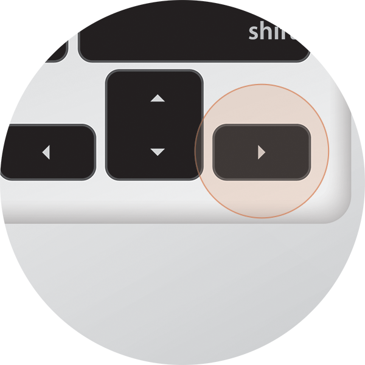

Off.canvas
Presenting
Off.canvas , for your web application
What the funk is it?!
It's an HTML, CSS and jQuery plugin to kick off your web applications with the 'Off Canvas' style sidebar we know and love from native mobile apps.
How do I use it?!
The Off.canvas jQuery plugin operates on the html tag of your page so in its most basic form you include jQuery and the Off.canvas plugin and CSS files and then run it with:
$('html').offcanvas();
This will create an off canvas layout with the default settings providing you supply the following html structure:
<aside id="sidebarLeft" class="sidebarLeft">
<div class="scrollableArea">
<!-- Place whatever HTML you want in here -->
</div>
</aside>
<section id="page" class="page">
<header class="topBar">
<a id="leftBurger" class="slideRight" href="">☰</a>
</header>
<div class="scrollableArea">
<!-- Place whatever HTML you want in here -->
</div>
</section>The scrollableArea divs are there to make the content scrollable as the overflow of the page is hidden to allow the off canvas effect to work. I chose not to make the side bar or main page scrollable directly so as to allow for more flexible layout options, such as adding a fixed position top bar like on this page.
The jQuery targets the ids of the side bar and main page, whilst the class names are used by the CSS.
Still Confused? Try these things...
-
Clicking/tapping the menu icon in the top left
-

Swiping to the right with your finger, or whichever digit you wish
-

Hitting the right arrow on your keyboard
Still Confused, or just want to trigger it for the lulz? Try clicking this button...
Click meh!!Ok so now you want it, right?
It's still a WIP, but you can download the source on GitHub :)